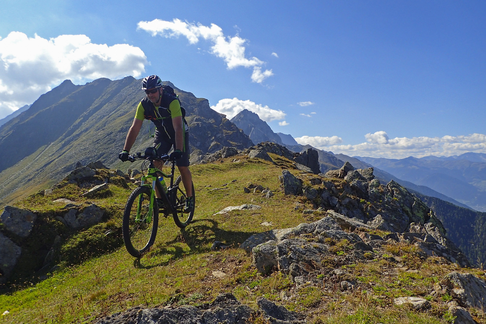
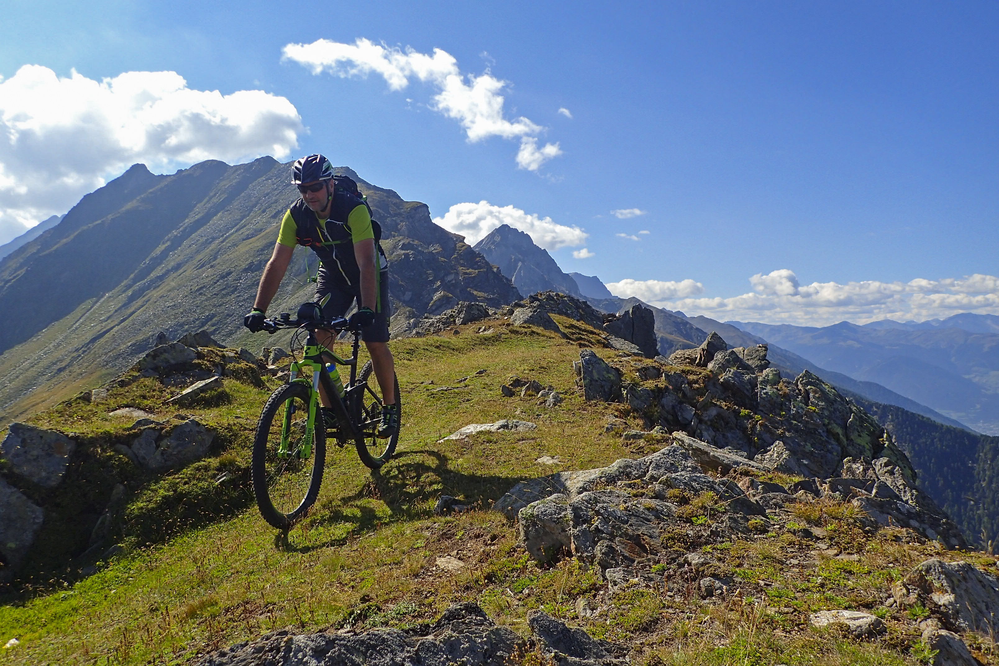

Bike King Borders was started by a biking enthusiast in 2010 with a vision of making Bike King Borders
a global destination for mountain biking and other outdoor activities. In 2003, the Scottish Land Reform Act gave mountain
bikers the right to access most land in Scotland, removing the restrictions that were in place in England and Wales.
This allows those local to the area and tourists to enjoy the stunning landscape of the Scottish borders and enjoy time
in nature away from the busy hustle of the cities. With new trails, a skills area and parking they offer a wide variety of
activities for all to enjoy from a biking enthusiast to a family trip through the borders. Employing experts in their field
to take forward the masterplan we have only continued to go from strength to strength.
See for yourself what awaits you at Bike King Borders
 
